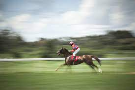

Overview
Purpose
[ a horse riding tournament that is to be held on 30 August in Ngong Hills, Kenya. Where children from the age of 12 to adults will be participating to win 100,000 price ]
Audience
[Witness a thrilling and captivating display of equestrian skill and horsemanship. Seek entertainmentthe anticipate the competitors' remarkable feats and the grace of the horses in motion.Find inspiration and admiration for the dedication, discipline, and perseverance demonstrated by both riders and their horses. ]
Branding
Website Logo

Style Guide
Color Palette
Palette URL: https://coolors.co/396e94-e7c24f-a43312-381d2a-aabd8c| Primary | Secondary | Accent 1 | Accent 2 |
|---|---|---|---|
| [#C2B2B4] | [#6B4E71] | [#3A4454] | [#53687E] |
Typography
Heading Font: [Helvetica]
Paragraph Font: [verdana]
Type of Activities to Complete
Photo and Video Galleries: Enjoy browsing through galleries showcasing high-quality photographs and videos from previous competitions. To relive memorable moments and appreciate the beauty and athleticism of the horses and riders.
Upcoming Events
Event Information: Access detailed information about the upcoming horse competitions, including dates, venues, schedules, and participating riders.
Navigation
Site Map
Content
Home page
Horse competitions in Kenya are an important part of the country's equestrian scene and offer opportunities for riders to showcase their skills and compete in various disciplines. Here are some key points about horse competitions in Kenya: Disciplines: Horse competitions in Kenya encompass a range of disciplines, including show jumping, dressage, eventing, endurance riding, polo, and gymkhana games. Each discipline has its own set of rules and objectives, attracting riders with different interests and expertise. Events and Competitions: Horse competitions in Kenya are organized throughout the year and take place at various venues across the country. These events can be single-day competitions or multi-day tournaments, featuring different classes and levels to accommodate riders of varying experience and skill. Organizations and Associations: Equestrian competitions in Kenya are often governed by organizations such as the Equestrian Federation of Kenya (EFK) and affiliated regional associations. These bodies regulate the sport, establish competition standards, and ensure fair play and rider safety. Nairobi International Show: One of the prominent equestrian events in Kenya is the Nairobi International Show, which features various equine competitions, including show jumping, dressage, and gymkhana games. This annual event attracts riders from Kenya and neighboring countries, along with a large audience of equestrian enthusiasts.
Images for the Home page
.jpeg)
[About Us]
Horse competitions in Kenya are a vibrant part of the country's equestrian scene, showcasing the skill, talent, and passion of riders and the beauty and athleticism of their horses. Here is some information about horse competitions in Kenya: Polo Tournaments: Kenya has a thriving polo community, and polo tournaments are a prominent feature of the equestrian calendar. These tournaments bring together teams and spectators for exhilarating matches that combine skilled horsemanship and strategic gameplay. Equestrian Clubs and Associations: Kenya has several equestrian clubs and associations that organize and promote horse competitions. These organizations provide a supportive community for riders, offer training programs, and host events that cater to various disciplines. Youth Competitions: Kenya places importance on nurturing young equestrian talent, and there are competitions specifically designed for young riders. These events encourage youth participation, skill development, and provide a stepping stone for riders to advance in their equestrian careers.
Images for the Page 2
.jpeg)
.jpeg)
[Contact Us]
To contact us; Follow these ------------------------Steps--------------------- Calls, Visit our official website of the horse competition site . Look for a "Contact" or "Contact Us" page, which will provide relevant contact information such as email addresses, phone numbers, or contact forms. Email, compose a professional and concise email stating your inquiry or purpose of contact. Clearly mention your interest in the horse competitions and any specific questions or requests you may have. Follow-Up, After making initial contact, allow the horse competition site some time to respond. If you do not receive a response within a reasonable period, you may consider following up with a polite reminder. Remember to be patient and respectful and to provide clear and relevant information in your inquiries to maximize the chances of receiving a prompt and helpful response.
Images for the Page 3
.jpeg)
.jpeg)
Wireframes
Create three wireframes for your site. One for each page and list them here
Home
[Any additional details about home that the wireframe does not make clear]
[Page 2]
[Any additional details about page 2 that the wireframe does not make clear]
[Page 3]
[Any additional details about page 3 that the wireframe does not make clear]